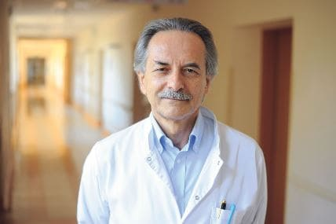
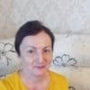

Hipertenzija, nešvarios kraujagyslės ir serganti širdis yra ankstyvos mirties
priežastis. Kaip to išvengti?
Julius Lapinskas
Visi žino, kad kraujospūdis, insultas ir infarktas yra kraujagyslių
„užteršimo“ cholesteroliu pasekmės. Tačiau mažai kas supranta, kad tai tik ledkalnio viršūnė.
„Nešvarios“ kraujagyslės yra 9 iš 10 tariamai nepagydomų lėtinių ligų kaltininkės.
Hipertenzija – liga, kuria serga kas trečias suaugęs Latvijoje, dauguma gyventojų apie
šią problemą nežino, todėl nesiima jokių veiksmų. Tarp žmonių, žinančių apie savo ligą, daugelis gydosi
neteisingai: vartoja vaistus nereguliariai arba visai nevartoja, per mažomis dozėmis ir pan. Deja,
ilgametė netinkama kraujospūdžio kontrolė neigiamai veikia širdies ir kraujagyslių sistemos bei inkstų
veiklą, sukelia daugybę sveikatai ir gyvybei pavojingų komplikacijų.

Ką turėtų žinoti hipertenzija sergantis pacientas?
Kodėl kraujagyslės sudaro 85% jūsų sveikatos?
Kas dar teršia kraujagysles, be cholesterolio?
4 akivaizdūs ir dar 7 paslėpti prastos kraujagyslių sveikatos požymiai
Kaip saugiai išvalyti kraujagysles namuose?
Į šiuos klausimus atsakė Europos sveikatos centro Rygoje CMCH Plaučių
kraujotakos, tromboembolijos ir kardiologijos klinikos vadovas. 2004-2007 metais vadovavo Latvijos
kardiologų draugijai. Europos kardiologų draugijos viceprezidentas, profesorius Tomas
Ramaneckas.
Julius Lapinskas: Pone Tomai Ramaneckai, ar visada
sakote, kad kraujagyslės sudaro 85% organizmo sveikatos? Kodėl taip yra?
Koks yra didžiausias organas žmogaus organizme? Mažai kas žino. Net medicinos studentai
dažnai klysta. Dažniausiai sakoma, kad smegenys ir kepenys. Labiau išsilavinę žmonės pasakys, kad tai
oda. Tiesą sakant, didžiausias organas yra mūsų kraujotakos sistema. Kraujagyslės yra ne tik vamzdeliai,
kuriais teka kraujas. Tai sudėtingas, vienas organas, kurio sunaikinimas iš karto baigiasi kančia.
Sergančios kojų kraujagysles – venų varikozė, nuolatinis
tinimas ir amžinas sunkumas kojose, šalčio ar nepakeliamo deginimo pojūtis kojose. Įtrūkę kulniukai.
Prasta cirkuliacija – trūksta apsaugos nuo bakterijų, taigi ir nuo grybelių. Nagai tampa tankūs ir ilgi.
Susilpnėję ir užterštos kraujagyslės sąnariuose – išdžiūvimas
iš kremzlės. Sąnariai šaudo ir skauda, vystosi osteochondrozė, išvaržos.
Išangės kraujagyslių susilpnėjimas – hemorojus žydi
violetiniais gumbeliais.
Akių kraujagyslės – pablogėja regėjimas, prieš akis atsiranda
„musės“, mažėja aiškumas. Vystosi katarakta. Akių paraudimas, kurį dažnai siejame su nuovargiu, iš
tikrųjų yra mikrokraujavimas – mažiausių akies kapiliarų plyšimas. Ir, žinoma, kraujagyslių ligų
karalienė Jos Didenybė Hipertenzija. O hipertenzija – insulto mama ir infarkto
sesuo.
Nėra laimės be sveikatos“ galima teigti – ir nėra sveikatos be švarių
kraujagyslių"
„Užsikimšę“ kraujagyslės – visų organų alkis.
Kaip antai, viršsvoris glaudžiai susijęs su kraujagyslėmis.
Kraujagyslės, nepaisdamos cholesterolio, sukelia organų badą, o kraujagyslės negali aprūpinti jų
pakankamai maistinių medžiagų. Todėl smegenys siunčia signalus, ką valgyti. Ir žmogus valgo. Tačiau mūsų
organai vis dar negauna reikiamo maisto medžiagų kiekio dėl užsikimšusių kraujagyslių. Tada smegenys vėl
ragina mus valgyti. Ir šis procesas nuolat kartojasi.
Iš čia ir nuolatinis poreikis ką nors suvalgyti, potraukis saldumynams ir
riebiam maistui – organizmui reikia kalorijų.
Kai bendradarbiai žmonėms sako: „Jūs turite aukštą kraujospūdį, nes turite antsvorio“.
Jie klysta dėl problemos priežasties. Hipertenziją sukelia ne antsvoris. O antsvorį sukelia
hipertenzija.
Todėl nenustosiu kartoti: jei nori gyventi visavertį gyvenimą, valyk ir atstatyk
kraujagysles. Švarios kraujagyslės yra raktas į atsikratyti 90% lėtinių ligų, kai kurios iš jų laikomos
„nepagydomomis“.
„Jei normalus kraujagyslės skerspjūvis yra piršto storio, tai 5 kg
cholesterolio plokštelių sumažina skerspjūvį iki 4 degtukų dydžio“
Julius Lapinskas:Visi žino, kad cholesterolis
blogai. Būtent jis užkemša mūsų kraujagysles, susiaurina tėkmę ir sutrikdo kraujotaką. Bet
kaltininkas ne tik jis?
Taip, būtent taip. Cholesterolio plokštelės, taip pat žinomos kaip „aterosklerozinės
plokštelės“, sukelia apie 60–70% kraujagyslių užsiteršimo.
Iki 50 metų žmogaus kraujagyslėse susikaupia iki 5 kg cholesterolio plokštelių.
Cholesterolio nuosėdos susiaurina tekėjimą kraujagyslėse 4-5 kartus.
5 kg bendra teršalų masė, susikaupusi laivuose sulaukus 50 metų
CHOLESTEROLIO
Kraujo krešuliai
KALKIFIKACIJA
Cholesterolio plokštelės nekelia pavojaus gyvybei. Taip, dėl jų
prastėja gyvenimo kokybė, pakyla kraujospūdis, stiprėja galvos ir sąnarių skausmai,
stiprėja silpnumas, apatija. Tačiau kraujo krešuliai, kurie taip pat kaupiasi mūsų
kraujagyslėse, yra daug pavojingesni.
Kraujo krešulių susikaupia daug mažiau, „tik“ apie 800 g – 1000 g.
Tačiau jų grėsmė yra jų nestabilumas. Bet kurią akimirką gali nutrūkti kraujo krešulys
(trombas) ir leistis į kelionę ieškoti aukos.
Jei krešulys pakankamai didelis,
jis tvirtai „užkiša“ aukos kraujagyslę. Atsiranda išemija – visiškai nutrūksta šio indo
maitinamo organo kraujo tiekimas.
Išeminis insultas yra smegenų kraujagyslių
užsikimšimas. Širdies priepuolis yra širdies arterijos užsikimšimas. Kepenų išemija,
pneumotoraksas, inkstų nepakankamumas. Hemorojus iš tikrųjų yra analinių kraujagyslių
išemija. Net mažiausių kraujagyslių užsikimšimas ant kojų ilgainiui sukelia nekrozę –
gangreną.
Kraujagyslių kalcifikaciją sukelia cheminių medžiagų likučiai ir
maisto priedai. Jų susikaupia sulaukus 50 metų 300–400 gramų. Dauguma kalcifikacijos
atsiranda smegenų kraujagyslėse.
Kalcifikacija pavojinga dėl aštrios kristalinės
struktūros. Esant reikšmingam susiaurėjimui - kraujagyslės spazmas, kurį sukelia
stresas, fizinis krūvis ar oro sąlygos, lemia tai, kad aštrus kalcifikacijos kristalas
gali pramušti kraujagyslę ir sukelti plyšimą. O plyšę smegenų kraujagyslės sukelia
hemoraginį insultą.
4 akivaizdūs ir 7 paslėpti kraujagyslių ligos požymiai
Jei esate vyresnis nei 45 metų ir niekada nevartojote maistinių medžiagų kraujagyslėms
valyti, garantuoju, kad turite kraujagyslių problemų.
Cholesteroliu užsikimšę kraujagyslės, kraujo krešuliai, kalcifikacija – tai beveik
natūralūs senėjimo procesai. Žinoma, šiandieninė mityba, narkotikai, rūkymas ir alkoholis „užteršimo“
procesą pagreitina 5-8 kartus. Bet mes visi esame žmonės, o kam slėptis, tokiame pasaulyje
gyvename.
Jei jums buvo diagnozuota hipertenzija, nėra ko klausytis. Hipertenzija – sergančių
kraujagyslių karalienė.
Ar jus kankina spaudimo šuoliai? Ar jis nuolat kyla ir ar reikia gerti vaistus? Taigi,
kraujagyslese, neduok Dieve, 30% kanalo liko. Likusi dalis yra tankiai padengta cholesterolio
plokštelėmis, kraujo krešuliais ir padengta kalcifikacija.
Todėl menkiausias stresas, orų kaita, magnetinės audros iš karto paveikia sveikatos
būklę. Pakyla slėgis, ima zvimbti galva, traška sąnariai.
4 ligos, kurias sukelia sergantys indai:
1. "Hipertenzija"
Hipertenzija vadinama „tyliuoju žudiku“.
Dauguma pacientų, sergančių hipertenzija, net nežino apie problemą, nes hipertenzija dažnai
nesukelia pavojaus ir yra besimptomė. Štai kodėl taip svarbu reguliariai matuoti kraujospūdį.
2. "Varikozė"
Baisu, patinsta venos ant kojų, sunkumas ir
skausmas, patinimas. Cholesterolis ir kraujo krešuliai „užkemša“ venas. Palaipsniui atsiranda
kraujagyslių „žvaigždės“, kurios vėliau virsta kraujagyslių tinklu. O tinklelis jau virsta
pilnomis venų varikozėmis.
3. Hemarojus
Kai užsikemša išangės kraujagyslės, hemorojus išsipučia.
Jei pirmiausia užsikemša kraujagyslės, tiekiančios kraują, atsiranda išangės plyšys.
4. Osteochondrozė
Tai yra kremzlės kraujotakos trūkumas. Kremzlė
išdžiūsta ir pradeda susidėvėti, nespėdama atsigauti. Neatsigauna ir išdžiūsta. Praranda
palaikymo gebėjimus. Druskos neišsiplauna ir pradeda nevaldomai kauptis, suformuodamos „našlės“
kuprą.
7 įspėjamieji ženklai:
1. Patinimas
Nešvarūs indai neturi laiko pašalinti skysčių. Jie sutrikdo
vandens ir druskos apykaitą. Vakarais kojos ištinsta taip, kad kojinės įsirėžia į kulkšnis,
palikdamos žymes. Paburkęs veidas ir maišeliai po akimis. Žiedų negalima nuimti nuo pirštų.
Patinęs pilvas signalizuoja apie vidaus organų patinimą
2. Spengimas ausyse
Nuo vos girdimo cypimo iki stipraus kaukimo ir
skambėjimo, dėl kurio neįmanoma susikaupti. Tai yra padidėjusio smegenų kraujagyslių slėgio,
kuris daro spaudimą ausies būgneliui, pasekmės
3. Svaigulys
„Girto“ būsenos jausmas, aštrūs ir staigūs galvos svaigimo
priepuoliai rodo, kad kraujagyslės „badauja“. Dažnai kenčia ir klausa.
4. Nemiga
Ar eidami miegoti po vidurnakčio jaučiatės mieguisti ir
negalite užmigti? Priežastis yra nepakankamas hipofizės aprūpinimas krauju. Nustoja gaminti
melatoniną, miego hormoną
5. Nuovargis
Jėgų apskritai trūksta. Niekas nedomina. Aš tiesiog noriu
gulėti ir valgyti. Šis pojūtis kyla dėl to, kad kūnas pereina į energijos taupymo režimą.
Organai negauna tinkamos mitybos per užterštus kraujagysles ir, kad nemirtų, jūsų kūnas bando
sumažinti aktyvumo lygį.
6. "Problema suregėjimu"
Pūgos prieš akis, neryškumas ir šydas
prieš akis. Tai yra akių kraujagyslių nepakankamumo simptomai.
7. Skausmas sanariuose
Dėl oro sąlygų sąnarius skauda ir traška.
Atsikėlęs ryte jautiesi ne žvalus ir pailsėjęs, o kaip sustingęs pusiau paralyžiuotas luošas. Po
miego reikia šiek tiek laiko ištempti sąnarius. Sinovinis skystis praranda savo savybes, sulimpa
kaip tešla
Dažniausiai žmonės vienu metu turi kelis simptomus skirtingomis kombinacijomis. Ar yra bent vienas
ženklas? Laivai beviltiškai muša varpą, jiems reikia valymo ir maitinimo.
Nelaimingieji kiekvieną ligą stengiasi gydyti individualiai. Tabletės nuo spaudimo, tepalai nuo venų
varikozės, žvakutės nuo hemorojaus, geliai nuo osteochondrozės. Ir, žinoma, nuskausminamųjų,
nuskausminamųjų, nuskausminamųjų.
Jie tiesiog įmeta krūvą pinigų į vaistinės ugnį. Nes visų ligų priežastis ta pati – kraujotakos
sutrikimai. Ir jūs turite pradėti nuo bendro kraujagyslių valymo.
„Dauguma vaistų nepadeda ir negydo, o silpnina ir kenkia“
Julius Lapinskas:Pone Tomai Ramaneckai, koks
efektyviausias būdas išvalyti kraujagysles nuo cholesterolio, krešulių ir kalcifikacijos?
Saugų valymo tinklą galiu pavadinti tik viena nepriekaištingos reputacijos
priemonė – . Tai prailgina gyvenimą 12–17 metų, pridedant
energijos ir
atsipalaidavimo, o ne kančios ir gyvybingumo praradimo kaina.
Saugus kaip žolelių arbata. O pagal efektyvumą yra antroje vietoje po
chirurginio kraujagyslių valymo – stenozės. Tačiau, skirtingai nuo operacijos, ji nesukelia komplikacijų
ar šalutinio poveikio. Kurso metu išvalomos visos organizmo kraujagyslės. Nuo didžiausių, storiausių
arterijų iki mažiausių, ploniausių kapiliarų.
as yra 100% natūralus produktas, pagamintas iš žolelių ekstraktų, kuris,
kontaktuodamas su vandeniu, pažadina gyvas molekules. Šie maži valikliai pašalina iš kraujagyslių
cholesterolio gleives, prie sienelių prilipusius krešulius, kalcifikacijas – vaistų likučius. Viskas,
kas trukdo laisvai kraujotakai. Bėgant metams susikaupusi tarša, nuodijanti jūsų gyvenimą,
išsiplauna per 1,5-2 mėnesius nuo reguliaraus naudojimo.
Galvos skausmai praeina, o kartu su jais ir spengimas ausyse. Smegenys, pakankamai
maitinamos švarių kraujagyslių, dirba superkompiuterio greičiu. Mintys aiškios ir
tikslios.
Sustiprinta klausa, girdite malonius garsus, į kuriuos anksčiau
nekreipėte dėmesio. Klausa taip pagerėja, kad net galima suprasti ramų pokalbį kitame
kambaryje.
Kvapų vaidmuo naujomis spalvomis. Išnyksta užsikimšusi nosis, lėtinė
sloga ir alergija. Atkuriami bronchai. Kvėpavimas laisvas ir reguliarus. Grynas oras pripildo plaučius,
pakelia kūną maloniomis bangomis, sukeldamas lengvos euforijos jausmą.
Skonis tampa ryškus ir perpildytas. Įprastas maistas teikia
nepaprastą malonumą. Jūs valgote mažiau ir gaunate daugiau. Dingsta nuolatinis potraukis saldumynams ir
riebalams.
Sąnariai dainuoja 'ačiū', daugiau jie nebeskausmingi. Sąnarių
traškėjimas visiškai išnyksta, jo vietoje atsiranda sklandūs judesiai dėl atkurto sąnarių hidratacijos.
Tai tarsi alyvos keitimas variklyje, juodo, nešvaraus, metalu užpildyto skysčio pakeitimas šviežia,
švaria alyva, kad būtų užtikrinta tobula trintis.
Julius Lapinskas:Įspūdinga. Tiesą sakant, pirmą
kartą girdžiu apie . Nors apskritai girdėti apie maistines medžiagas.
Japonijoje ir Izraelyje
maistinės medžiagos buvo įteisintos kaip pasirenkamas gydymo būdas. O Latvijoje šiomis lėšomis vis
dar nepasitiki. Kodėl?
Leiskite man papasakoti jums įspėjamąjį pasakojimą apie nepasitikėjimą. 1928 m.
buvo išrastas pirmasis antibiotikas, penicilinas. Jis nesunkiai gydė dizenteriją ir
šiltinę, kai žmonės neišvengiamai mirė.
Tačiau dauguma žmonių netikėjo, kad tai gali padėti, nes buvo 1000 kartų nusivylę
bandydami išsigydyti. Tie, kurie nusivylė 1000 kartų ir nepabijojo 1001 bandymo, atgavo jėgas. O tie,
kurie pasidavė, mostelėjo rankomis sakydami: „Dar vienas stebuklingas vaistas, kuris nepadės“, dingo,
nors gijimas buvo tiesiai po nosimi.
Kaip kadaise penicilinas nugalėjo ligą tuo metu: dizenteriją, vidurių šiltinę ir
pneumoninį marą. Su laiku as pašalins kraujagyslių ligas. Pirmieji žingsniai jau
žengti – Vokietija, Japonija, Kanada, Korėja, Šveicarija ir Izraelis priėmė įstatymus, pagal kuriuos
indai valomi maistinėmis medžiagomis, o ne vaistų terapija.
"Mūsų abejonės - išdavikai, dėl jų mes prarandame daug galimybių, dėl
baimės pabandyti.”
Latvijoje oficialiai registruotas tik vienoje vietoje –
Rygos ligoninėje.
Būtent tame, kur gydoma mūsų „visuomenės grietinėlė“ – ministrai, deputatai, įžymybės ir kitas elitas.
Jie gydomi pagal Izraelio protokolus, jiems negalioja mūsų sveikatos apsaugos ministro įsakymai. Todėl
pacientai turi rezultatų, o ne tik nesibaigiantį procesą.
Sveikatos apsaugos ministerija likusiems mūsų piliečiams siūlo gydytis chemikalais,
kuriuos gamina tam pačiam elitui priklausančios gamyklos.
2 mėnesiai vartojant – tarsi atgimimas.
Julius Lapinskas:Aš taip pat manau, kad abejonės
- mūsų didžiausias priešas, todėl nebijau išbandyti ką nors naujo. Įsivaizduok, išėmiau ,
atidarau pakuotę. Kas vyksta tada? Kaip veikia ši priemonė?
Prisotinti drėgmės ir deguonies vaistiniai ekstraktai įgauna vandenilio peroksido
deguonies poveikį.
o molekulės yra mažytės deguonies bombos. Jie suardo cholesterolio sankaupas
jūsų arterijose ir neleidžia kraujui tekėti laisvai.
Vakaruose as buvo vertinamas kaip „krajagyslių valytojas“. Tai labai tiksliai
atspindi jo esmę.
Štai kodėl yra toks veiksmingas – geriate gyvus ekstraktus,
kurie aktyviai
veikia. Tuo tarpu priemonės suteikia jums tik pasyvius, sterilizuotus molekulinius
skeletus.
formulė akimirksniu sugeria gyvas daleles. Deguonies
prisotinti ekstraktai
lengvai įsigeria į stemplės sieneles. Todėl nesukelia rėmens, kartumo
burnoje, raugėjimo,
nedirgina žarnyno ir apsaugo skrandį. Net opos drąsiai geria
"as yra retų ekstraktų lobynas, kuris harmoningai palaiko
kraujagysles švarias ir stiprias."
IŠVALO "TUNELIUS"
Alyvuogių lapų ekstraktas išvalo nuo perkrovos cholesterolio. Medžiagos molekulės kaip
kaltas sulaužo prie kraujagyslių sienelių prilipusias cholesterolio molekules. Suteikia laisvą
kraujotaką. Organai pagaliau pradeda maitintis. Kremzlė grįžta į gyvenimą, prisotinta drėgmės ir
deguonies, suaktyvindama savaiminio gijimo mechanizmą. Atkuriamas lankstumas. Šlifavimas ir traškėjimas
išnyksta nuo kaklo, nugaros ir sąnarių. Keliai ir pirštai nebelūžta nuo oro.
Patinimas išnyksta. Net ir visą dieną praleidus ant kojų, jos netinsta. Atkuriamas odos
aprūpinimas krauju – išnyksta žvaigždės ir kraujagyslių tinklas. Venų varikozė palaipsniui mažėja,
hemorojus išdžiūsta.
KONVERTUOJA Į ENERGIJĄ
Įsijungia Chromas molekulės. Jie fiksuoja cholesterolio molekulių
„fragmentus“ ir, susijungę su jomis, paverčia juos didelio tankio naudingais lipoproteinais, kurie
dalyvauja skaidant riebalus.
as vienu šūviu nužudo du paukščius – pašalina kraujagysles teršiantį
cholesterolį ir skatina tinkamą riebalų deginimą. To dėka pajunti galingą jėgų antplūdį, norisi judėti,
akys atgyja, kyla jausmas ir noras „versti kalnus“.
SUMAŽINA SPAZMUS
Gymnema Sylvester ekstraktas malšina kraujagyslių spazmus. Tai toks „valerijonas“
kraujagyslėms. Ramina ir atpalaiduoja dėl kraujotakos stokos susitraukusias kraujagysles. Slėgis
sklandžiai ir saugiai grįžta į normalų. Išnyksta galvos skausmai, atslūgsta spengimas ausyse, sklandžiai
ir lengvai dirba plaučiai ir bronchai.
IŠKRAUNA ŠIRDĮ
Vitaminas C – gerina kraujagyslių stiprumą, normalizuoja cholesterolio
apykaitą, teigiamai veikia endokrininę ir nervų sistemas.
Tarsi cemento maišelis būtų ištrauktas iš širdies, jis lengviau atsikvėpė. Širdies
ritmas tampa lėtas ir reguliarus. Aritmija ir tachikardija nebėra problema. Dėl širdies embolijos
atsiradęs aštrus dilgčiojimas krūtinėje nepasikartoja ir pasimiršta amžiams. Širdies priepuolio rizika
sumažėja iki nulio.
DRUGELIO EFEKTAS
as yra tarsi drugelio sparnų plazdėjimas, sukeliantis grandininę jaudinančių
pokyčių reakciją. Pradedant nuo laipsniško dešimtmečius kraujagyslėse susikaupusių nešvarumų valymo,
pradeda grandininę reakciją, kuri valo organizmą.
LENGVAS PABUDIMAS
Ryte atsibundi ir lengvai išlipi iš lovos – nereikia prisiversti keltis tempiant ir
tiesiant kojas, traškant nugarą ir kaklą.
Ryte organizmas pilnas energijos ir jėgų, nes kraujagyslės visiškai išsivalo, o per
naktį visi organai pakankamai pamaitinami ir pailsi. Nė vienai kūno daliai nebuvo atimtas kraujo
tiekimas, įgavo jėgų prieš naują dieną.
SKANŪS PUSRYČIAI
Pusryčiams suvalgote sumuštinį su storu sviesto sluoksniu ir traškia šonine – kepenys
ir skrandis su jais susidoroja. Nebelieka kartaus skonio, nebereikia veriančio skausmo skrandyje.
as išvalė kraujagysles, kurios maitina skrandį, dabar gali virškinti net
nagą.
PILNA JĖGŲ
Išėjus iš namų nebereikia rūpintis savo kojomis – vaikščiojimas nėra našta, vaikščioti
galima visą dieną, kojos nepavargs ir netins. Sandalai, batai, kojinės neįsigilina į ištinusias pėdas
kaip špagatas į dešrą.
ABSOLIUTI RAMYBĖ
Jūs esate visiškai ramus ir atsipalaidavęs. Nebereikia nuolatinio skausmo, kuris neleis
jūsų mintims, trukdančio jums sutelkti dėmesį į ką nors kitą. Kai nieko neskauda, pažįstami dalykai,
garsai ir kvapai žaidžia naujomis, seniai pamirštomis spalvomis.
ŠVARIOS MINTYS
Net ir po sunkios darbo dienos namo grįžtate švariu, lengvu protu. Smegenys veikia kaip
šveicariškas laikrodis, visiškai nesijaučiate pavargę.
GERAS MIEGAS
O dabar gulėdamas lovoje greitai ir maloniai krenti į sapną. Jau praėjo tie laikai, kai
pusę nakties blaškydavai lovoje, retkarčiais apversdamas pagalvę, o miegas niekada neatėjo. Dabar viskas
paprasta – tu nusprendi, kada užmigti, o kūnas klusniai vykdo tavo komandą.
„Tai nuostabus ir natūralus būdas gydyti įvairias ligas ir pagerinti kasdienę
žmogaus veiklą. Ir jūs turite rasti geriausią būdą, kaip tai įtraukti į savo gyvenimą.
Deficito ir lengvatinė programa
Julius Lapinskas:,
kiek mums žinoma,
dingo iš daugelio vaistinių? Kodėl?
- Deja, taip. Nuo šių metų pradžios, daugiau vaistinėse nebepasiekiamas.
Konflikto priežastimi tapo vaistinių tinklo godumas, už kiekvieną parduotą prekę iš gamintojo
pareikalavęs 480 eurų! Nustačius ir taip didelę gamintojo kainos maržą (Kai kuriose Varšuvos
vaistinėse savikaina siekė tūkstantį eurų), vaistininkai gamintojui
norėjo uždėti papildomą
mokestį.
Vaistinių atstovai teisinasi, kad toks papildomas mokestis leidžia išgyventi. Juk yra
produktas, kurį reikia pirkti kas 7-10 metų. Be to, išvalius kraujagysles šiais milteliais, žmogui
nebereikia vaistų, kuriuos jis nuolat vartojo! Žmonės nustoja mažinti kraujospūdį ir neperka vaistų
nuo skausmo. Žymiai sumažintas vaistų nuo astmos ir diabeto suvartojimas. O tai lemia nuostolius
vaistinėms. Štai kodėl reikalauja aukščiausios kainos.
Dėl to gamintojas nutraukė ryšius su visomis vaistinėmis ir perėjo prie platinimo tik
internetu. Iš esmės tai yra teisinga. Spręskite patys: norint išsinuomoti prekybos vietą nereikia
mokėti nuomos mokesčio, vaistinėms kyšių nereikia. Štai kodėl dabar galima įsigyti kaip
specialaus pasiūlymo dalį.
Mūsų institutas kartu su Nacionaliniu širdies ir kraujagyslių chirurgijos srities medicinos tyrimų
centru bei gamintoju pradėjo vykdyti nuolaidų programą pagal telemedicinos (Internet
Medicine) projektą.
Visi norintys gali užsisakyti už ypatingą kainą.
Julius Lapinskas:Ką reikia padaryti, norint
pasinaudoti programa?
Norėdami gauti , turite atitikti šias
sąlygas:
Sąlygos gauti
Tik asmeniniam naudojimui.
Kreiptis per oficialią formą programos:
Tai daroma siekiant kovoti su spekuliantais, bandančiais stambiu
mastu pirkti ir patiems jį perparduoti.
Oficiali paraiškos forma yra kokybės ir apsaugos nuo spekuliantų
garantija.
Julius Lapinskas:Kaip ilgai truks pašalpų
programa?
Iki imtinai arba kol baigsis
atsargos. Ir visa tai nepaisant reklamos stokos radijuje ir
televizijoje. Žmonės dalijasi
informacija, rekomenduoja artimiesiems ir draugams. Net ir mums buvo netikėta, kad informacija apie
priemonę pradėjo sklisti taip greitai.
Todėl patariame kuo greičiau užsisakyti . Šiais metais
tokios programos
nebus.
Šiai mintei , liko:
60 vnt.
DISKUSIJOS IR KLAUSIMAI:
Areta Andreiko
Praėjusį mėnesį užsisakiau šį produktą sau. Kraujospūdis kartais
buvo gana aukštas, o širdies susitraukimų dažnis kartais buvo netolygus. Vartojus šią
priemonę 3-4 savaites, kraujospūdis normalizavosi. Dabar jaučiuosi daug geriau. Ačiū!
Donata Meldytė
Aš gavau , kaip parašyta! Spaudimas,
galvos skausmai vos ne
kas vakara, taip kad norejau lipti sienomis, nepadejo net nuskausminamieji. Tik vėliau
sužinojau, kad nuo spaudimo skauda galvą. Bet esmė ne tame. Draugas man rekomendavo ,
pavyko užsisakyti pagal lengvatinę programą, likau labai patenkinta. Draugas man rekodavo
, pavyko gaut pagal lengvą programą, likau labai patenkinta.
Supratau, kad prieš
valydamas kraujagysles tikrai negyvenau! Galva nebevargina, dingo venų varikozė IR
SVARBIAUSIA - NUMEČIAU 24 KG! nuo 101 kg iki 77! Štai ką reiškia kraujotakos normalizavimas!
tikrai rekomenduočiau visiems kaip profilaktinę priemonę!
Emilija
Areta Andreiko, ar turite giminių ar pažįstamų regione, kuriame
veikia programa? Galite paprašyti jų užsakyti. Nebent, žinoma, jie nuspręstų pasilikti
sau :)), pagal programos sąlygas vienam asmeniui galite
užsisakyti tik vieną
pakuotę.
Gelminė Ružytė
Aš nusipirkau 3-mėnesių gydymą už beveik 2400 eurų. Praėjusiais
metais, kai buvo vaistinėse. Ir pasakysiu, kad nesigailiu! Nors
tai pasirodė brangu,
vien per pastaruosius metus jau pavyko sutaupyti beveik tiek pat kitų vaistų. Taip, ir
gyvenimas tapo daug lengvesnis, jo negalima suskaičiuoti pinigais! Būdamas 51-erių jaučiausi
silpnas senelis. Stengiausi per daug nenuklysti nuo kraujospūdžio matuoklio ir kraujospūdžio
tablečių, net nesvajojau gyventi iki pensijos, visą laiką plyšo galva, net dažnai
galvodavau, kad verčiau numirsiu... Pamiršau apie spaudimą po 2 mėnesių, jaučiuosi kaip
sveikas jaunuolis (jei suprantate ką turiu omenyje)! Taigi net jei jūsų regione nėra
lengvatinės programos, užsisakykite be nuolaidos, už bet kokius pinigus – nepasigailėsite!
Man kažkas atrodo, kad „“ greitai bus uždraustas Latvijoje, nes tiek daug įmonių
nuodija gyvenimą ir pasiima pelną.
Aida Veilytė
- geriausia priemonė iš visų. Iš
pradžių vartojau Adelfaną,
paskui Erinitą. Aš žinau, kad tai pasenę priemonės. Bet aš nemėgstu eiti pas specialistus,
ir tai netrukdė. Vartodavau kartais, kai pakildavo spaudimas arba stipriai plakdavo širdis.
Bet staiga jie nustojo veikti. Tada nuėjau pas specialistą, jis rekomendavo išbandyti naują
produktą (jaunas specialistas turbūt dar tikėjo, kad produktai turi būti skirti
žmonėms, o ne pinigų melžimui!). man padėjo nuo pirmos dozės –
spaudimas iš karto
nukrito, bet toliau ėjau kursą, kaip man rekomendavo specialistė. Po 3 savaičių pamiršau,
kas yra hipertenzija. 10 metų mane kankinusios venų varikozės išnyko! Aš taip pat turėjau
moterišką problemą, kuri taip pat išnyko. Aš jaučiuosi puikiai, kaip jaunystėje!
Adelė Cilminkytė
Ačiū! Aš jau užsisakiau paketą. Bandysiu.
Juozas Krunikas
Latvijos taip pat turi, ar kas nors žino?
Indulis Švarcbahs(redaktorius)
Ne, Latvijos regione nuolaidų programa planuojama vėliau, jei niekas
nepasikeis, į miestus ir regionus bus išsiųsta 16800 pakuočių .
Karolis Bliukštas
Kas yra 16 800 pakuočių viename regione? Tai lašas vandenyne...
Tėja Bureikytė
Žaviuosi parazitais!!! Visi tau kažką skolingi! Kai supratau, kad
man reikia o, nelaukiau! Pasiskolinau ir nusipirkau! Laukia jie nuolaidų! Kaip ne
gėda! Man būtų gėda rašyti kažką panašaus!
Viktorija Šiaudikytė
Neteiskite, kad nebūtumėte teisiami! Tu nežinai, kokia situacija!
Gal žmogus neįgalus, iš kur gauti pinigų?
Taura Liutkytė
Mamai pradėjo tirpti pirštai, pažįstamas specialistas patarė
išvalyti kraujagysles. Išrašė „statinų“, bet perskaičiau, kad jie gali sukelti žarnyno vėžį,
ir nusprendžiau nerizikuoti. Todėl aš netyčia sužinojau apie .
Nusipirkome preparatą
už 125eur kursą Bet rezultatai netruko laukti, po kelių dienų labai pagerėjo veido spalva,
plaukai, nagai, bendra organizmo būklė, o antrą savaitę pirštai buvo tik šiek tiek nutirpę.
Po 1,5 mėnesio tirpimas visiškai išnyko + spaudimas normalizavosi. Gera savijauta, kaip
dangus ir žemė, mama gavo daug energijos, pagerėjo atmintis, net esant blogam orui nustojo
skaudėti sąnarius. Apskritai priemonė yra puiki, rekomenduoju visiems!
Marlena Kulkytė
Ačiū už šį komentarą! Esu neįtikėtina kelionių į polikliniką
entuziastė, juolab kad gydytojai dažniausiai išrašo arba brangius, arba „skandalingus“
vaistus (pamenu, nė vienoje mūsų miesto vaistinėje neradau „nepaprastų“ receptinių akių
lašų. Šokas! Gydytojai ne visada „mato“ mūsų kūno problemas iš vidaus. Rankos su
pertraukomis nutirpsta rytais jau metus laiko.Šių reakcijų dėka išbandysiu tą patį .
Net jei tirpimas neturi įtakos, kraujagyslių valymas niekada nebus nereikalingas! Lygiai
taip pat, kaip vartojant natūralų produktą. Ačiū!!
Airida Lazorovienė
Ačiū už įdomų straipsnį. Atvėrė man akis vienu metu. Neseniai
turėjau padidėjusį cholesterolio kiekį, todėl gydytojas man paskyrė statinų. Kai atostogauju
nuo statinų, stengiuosi vartoti ir natūrali formulė suteikia
daugiau pasitikėjimo
savimi.
Irena Tamošiūnienė
Girdėjau apie šį kraujagyslių valymo būdą, bet dar neišbandžiau.
Manau, dabar atėjo laikas pabandyti: -)
Rita Mazintė
Rizikavau ir iki šiol nesigailiu. Jei turite problemų su
kraujagyslėmis, rekomenduoju. Nebuvo jokių šalutinių poveikių, esu patenkinta
rezultatais
Kamilė Andrijauskienė
Turiu padidėjusį cholesterolio kiekį, man išrašė vaistinės
preparatą. Savaitę negalėjau net gerti, visi limfmazgiai buvo patinę, ypač kaklo, negalėjau
pasukti galvos. Be to, ėmė silpti regėjimas. Žodžiu, po 4 dienų jo vartojimo, man prieš akis
atsirado kažkoks „rūkas“. Gydytoja sakė, kad tai atsitinka po statinų, tai yra šalutinis
poveikis. Jie atsiuntė man pakaitalą, bet aš bijojau jį naudoti. Dabar galvoju išbandyti
, ar natūrali formulė galėtų sukelti šalutinį poveikį? Ar turiu
dar laiko?
Romualdas Kovalskis
as yra pirmasis produktas nuo cholesterolio! Po to nebuvo
jokio šalutinio poveikio, tikrai jokio šalutinio poveikio – viskas natūralu. Jei yra
alergija, tai retai.
Julija Šmilytė
Geriausias vaistas nuo cholesterolio yra dieta!
Miglė Moškaitienė
Dieta padės išvengti naujų nuosėdų susidarymo, tačiau nepaveiks
senųjų. Patikėkite, šią dietos istoriją jau esu išgyvenusi keletą kartų.
Emerita Luknė
Mano bendras cholesterolio kiekis buvo 6,8, kuris man yra labai
didelis. Nuolatinis galvos svaigimas, spaudimo padidėjimas ir bloga sveikata. O po 2 mėnesių
rezultatas buvo 3,4. Bet svarbiausia – mano savijauta! Dabar jūs galite nebeeiti į apžiūrą.
Aš supratau skirtumą, kas yra kraujas be "riebalų", kai mano galva pradėjo aiškiai
dirbti)) žmonės sutinka mane ir sako, kad net mano tarimas pagerėjo! Viskas pasikeitė
Irma Lazarovienė
Ačiū už informaciją! Noriu pabandyti, spaudimas neleidžia man
gyventi...

Mercelė Kulišiunienė
Pritariu kiekvienam žodžiui, yra
stebuklas, viena
ekonomiškiausių ir efektyviausių priemonių! Palyginti su nereceptiniais produktais, jis yra
10 kartų pigesnis, rezultatai išlieka 10 kartų ilgiau ir neturi šalutinio poveikio.